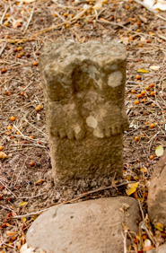

6

Des sculptures et des monolithes ont été trouvés dans cette région par Hyatt Verrill en 1926. Certains d'entre eux ont été coupés de leur piédestal et emmenés dans plusieurs musées aux États-Unis. Ici, vous pouvez voir les restes d'une sculpture, un ensemble de pieds, où la sculpture a été coupée trop haut.